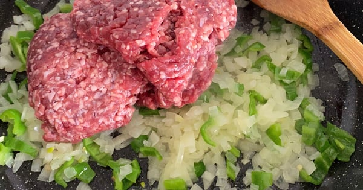

En Sevilen Haliyle: Kayseri Yağlaması Tarifi
Kayseri Yağlaması Tarifi İçin Malzemeler
Hamuru için:
-
- 4 su bardağı un
- 1/2 su bardağı ılık su
- 1 su bardağı ılık süt
- 1 yemek kaşığı sıvı yağ
- 1 yemek kaşığı tuz
- 1 yemek kaşığı instant maya
- 1 tatlı kaşığı toz şeker
İçi için:
-
- 350 gram kıyma
- 3 adet rendelenmiş domates
- 1,5 yemek kaşığı domates salçası
- 1 adet soğan
- 1 yemek kaşığı zeytinyağ
- 1 çay kaşığı karabiber
- 1 çay kaşığı tuz
- 1/2 su bardağı su
Kayseri Yağlaması Tarifi Nasıl Yapılır?
Hamuru İçin:
-
Bir kabın içine unu alın ve ortasına bir havuz açın. Ilık süt, maya, sıvı yağ, tuz ve şekeri ilave ederek karıştırın.
-
Ilık suyu azar azar ilave ederek hamuru yoğurun. Temiz bir kabın içine hafifçe un serpin ve hazırladığınız hamuru içine aktarın.
-
Üzerini streç film ile kapatarak oda sıcaklığında iki katına çıkana kadar yaklaşık 40 dakika kadar mayalandırmaya bırakın. Bezeler haline getirin ve üzerini bir bezle kapatarak 10 dakika mayalanmaya bırakın.
İçi İçin:
-
Soğanları küp küp doğrayın.Bir tavanın içine kıymaları alın hafifçe soteleyin.
-
Ardından içine soğanları ilave edin ve kavurun. Soğanlar kavurulunca içine rendelenmiş domatesleri ilave edin.
 -
Salçasını da ilave edin ve pişmeye bırakın. Ardından azar azar su ilave edin, tuz ve karabiberini ekleyin.
-
Bu şekilde 5-6 dakika daha pişirdikten sonra ocaktan alın.
Birleştirme Aşaması:
-
Oklava yardımıyla hafif unlayarak bezeleri tek tek açın.
-
Yapışmaz bir tavayı ocağın üzerine alın ve iyice ısıtın. Isınan tavaya açtığınız hamurları tek tek aktarın ve arkalı önlü pişirin. Tüm hamura aynı işlemi uygulayın.
-
Tüm yufkaları pişirdikten sonra bir pişmiş yufka ardından hazırladığınız kıymalı iç, ardından tekrar yufka sıralamasıyla kat çıkın.
-
Tüm iç harç ve yufkalar bittiğinde üzerini ince kıyılmış maydanozla süsleyin ve dilimleyerek servis edin.

-
Dilerseniz Kayseri yağlamasının üzerine yoğurtlu sarımsaklı sos da gezdirebilirsiniz. Şimdiden ellerinize sağlık.
Yorumlar